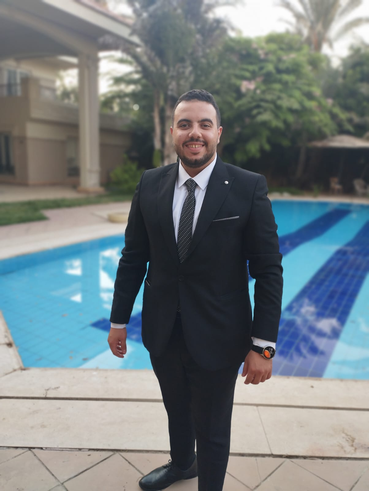

Ibrahim Aref

Summary
Certified real estate appraiser in Saudi Arabia, experienced in valuing residential, commercial, and land properties. Skilled in market analysis, site inspection, and preparing reports aligned with TAQEEM and international standards.
Education
Bachelor of Business Administration - Canadian International College (2015.2020)
Work Eperience
-
Customer Service at Al Ahli Bank
(2020-2021)
- Handled customer inquiries about banking products and services
- Assisted customers with account management and transaction support
- Resolved issues related to debit/credit cards, online banking, and payments
- Ensured compliance with banking policies and regulatory requirements
- Real Estate Appraiser - at Bussma
(2021-2025)
- Collect and analyze market data including recent sales, rental rates, and economic trends
- Apply various valuation methods such as sales comparison, income, and cost approaches
- Prepare detailed and accurate appraisal reports for residential, commercial, and industrial properties
- Determine the highest and best use of the property for accurate valuation
Skills
- Strong communication skills (verbal and written)
- Time management and organizational abilities
- Strong analytical and problem-solving skills
- Teamwork and collaboration with other departments
- Basic computer skills (MS Office, email)
- Real estate market data analysis
- Strong interpersonal and relationship-building skills
- Ability to handle difficult customers professionally
Certifications
- Full Stack Web Developer – Russian Cultural Center
Additional Information